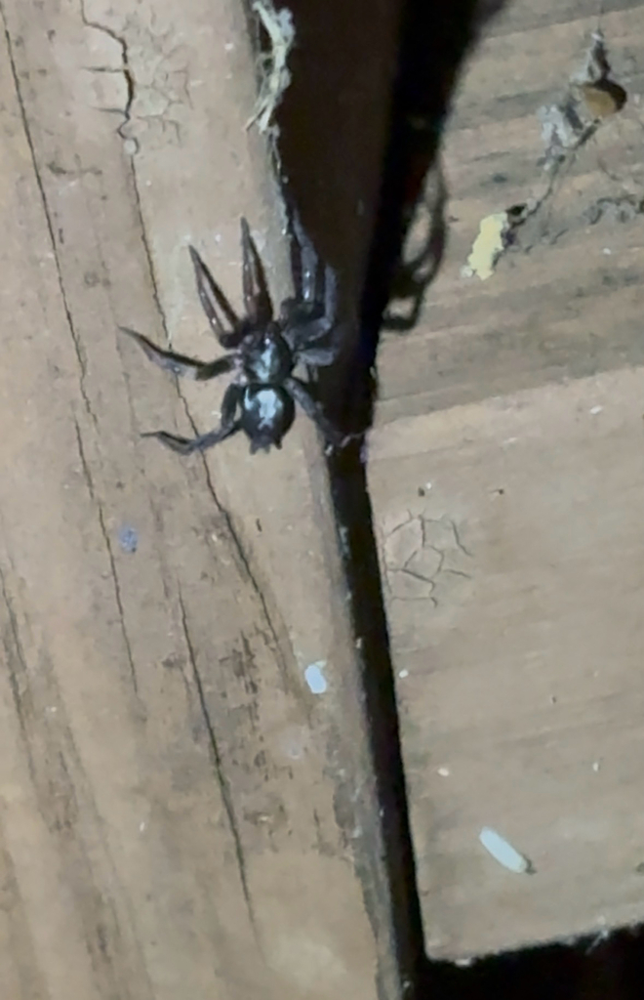

A second shape
at the seam
Eastern Parson Spider / Herpyllus ecclesiasticus

Observed 11 October 2026
Jumpers Hole Rd, Severna Park, Maryland
Common name: Eastern Parson Spider
Scientific name: Herpyllus ecclesiasticus
Photograph by Seekingsince06, iNaturalist observation 407457036. Photo shared under CC BY-NC 4.0. The second panel is a crop of the supplied image.